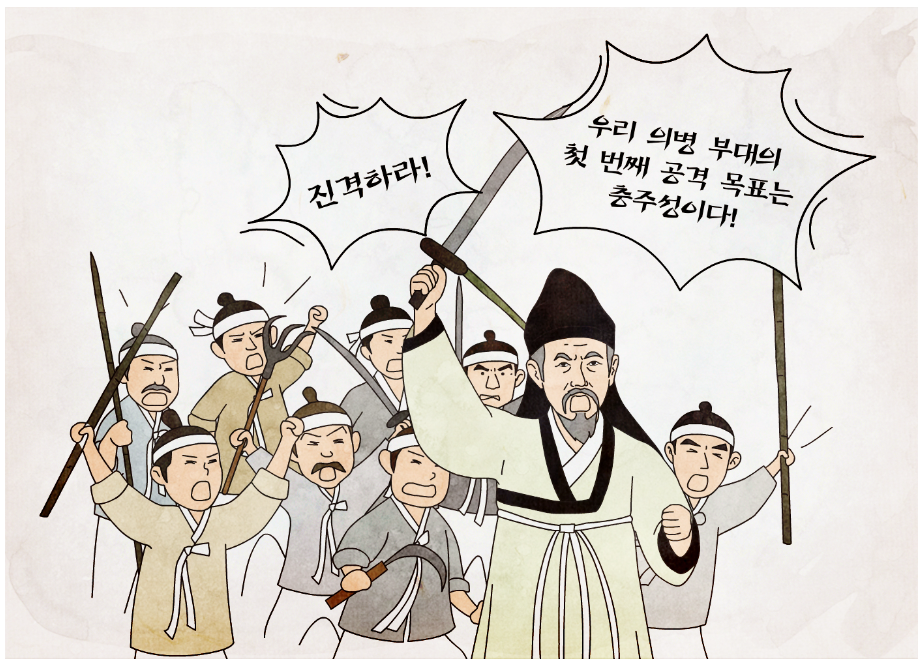

최초의 항일 의병
일어나게 된 배경(계기):
을미사변(명성황후 시해사건)
단발령 공포
->의병 투쟁 확산
참여 계층:
유생-유학자 (유인석, 이소응, 허위 등)
농민과 동학 농민군의 잔여 세력
전개:
아관파천 이후 고종이 단발령 취소, 의병 해산 권고 조칙 발표
-> 대부분 해산
일부 농민들이 활빈당을 조직하여 투쟁 지속
*활빈당:농민 운동이나 의병에 참여했던 사람들은 활빈당 등의 무장결사를 조직하여 부정한 부호나 탐관오리 처단, 외세배척 등을 내세우며 투쟁을 이어갔다.
<활빈당 강령-한성신보(1900.10.8)>
시급히 방곡령 실시하여 백성을 구제할 것
시징에 외국 상인이 나오는 것을 엄금할 것
사전을 혁파하고 토지를 균등하게 나눌 것
외국에 철도 부설권을 허락하지 말 것
<유인석 창의문(1895)-의암집>
우리 국모의 원수를 생각하며 이를 갈았는데 참혹한 일이 더하여 우리 부모에게서 받은 머리털을 풀 베듯이 베어 버리니..(후략)
근왕주의적, 봉건적 성격
<의병을 지휘하는 유인석>